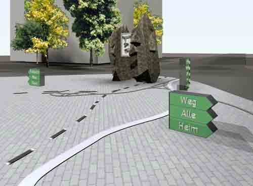

integration
into public space


Th installation inoutSite II will be viewed on a Plasma screen, embodied in a foundling. The stone is slit in two halfs and positioned on the central place of the city. The side facing the place shows the installation, the other side shows the statistics of the usage of the site. Via Internet markers can be labeled by the citizens. Inlays in the pavement of the place are showing the orientation of the installation in the geographic surroundings.
